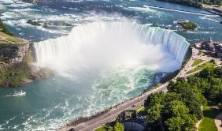

Les randonnées de Martinique à ne surtout pas manquer
Le 10.09.18
Les randonnées en Martinique sont nombreuses et permettent de découvrir l'île en profondeur...
Avec sa grande diversité de paysages et ses nombreux sentiers balisésk il serait dommage de se contenter de lézarder toute la journée sur la plage, sans partir à l'assaut des plus beaux points de vue de la Martinique ...
Tous mes conseils pour visiter les chutes du Niagara

Le 25.11.18
Gigantesques et vertigineuses, les chutes du Niagara sont les plus puissantes chutes d'Amérique du Nord.
Site incontournable, qui fait office de frontière naturelle entre le Canada et les Etats-Unis, elles sont visitées chaque année par des milliers de personnes...
Le top 10 des livres pour préparer un tour du monde
Le 05.01.19
Pour préparer un tour du monde, il n'y a pas que les blogs de voyage !
Il y a aussi les livres. Pour rêver, planifier son itinéraire, réfléchir au sens de son voyage...